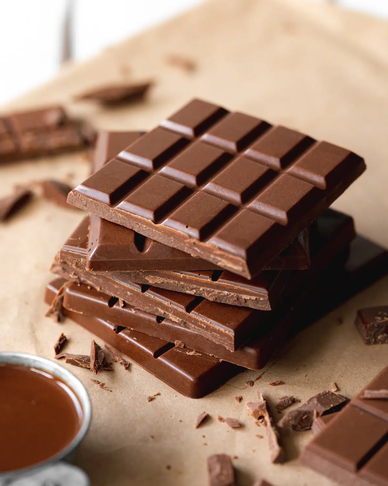

Chocolate recipe

Description
This recipe offers a straightforward method for making delicious milk chocolate bars at home. These bars can be enjoyed on their own, used in baking recipes, melted down for hot chocolate, or gifted to friends and family.
Whether its as a standalone treat, goes in your cookies, brownies, or cakes, or melted down for homemade hot chocolate, These homemade milk chocolate bars can be stored in an airtight container in a cool, dry place for up to a few weeks.
This recipe contains cocoa butter, cocoa powder, powdered sugar, and powdered milk. Individuals with allergies to dairy or cocoa should avoid consuming this product. Additionally, always check the labels on the ingredients used to ensure they are safe for any specific dietary needs or allergies.
Ingredients
- 1 cup cocoa butter
- 1/2 cup cocoa powder
- 1/2 cup powdered sugar (adjust to taste)
- 1/2 cup powdered milk
- Pinch of salt (optional)
- Vanilla extract (optional)
Steps:
- Melt the cocoa butter: Begin by melting the cocoa butter. You can do this using a double boiler or in the microwave, stirring frequently until fully melted.
- Incorporate cocoa powder: Once melted, remove the cocoa butter from heat and whisk in the cocoa powder until smooth.
- Sweeten the chocolate: Gradually add powdered sugar to the melted cocoa butter mixture, whisking continuously until well combined and smooth.
- Add powdered milk: Stir in the powdered milk until the mixture is creamy and free of lumps.
- Flavoring (optional): For added flavor, include a splash of vanilla extract. A pinch of salt can also enhance the taste if desired.
- Pour into molds: Pour the chocolate mixture into molds or a lined baking tray, spreading evenly.
- Set: Place the molds or tray in the refrigerator and allow the chocolate bars to set for 2-3 hours, or until firm.
- Enjoy: Once set, remove the chocolate bars from molds or cut them into desired shapes. They are now ready to be savored as a treat or used in your favorite recipes.